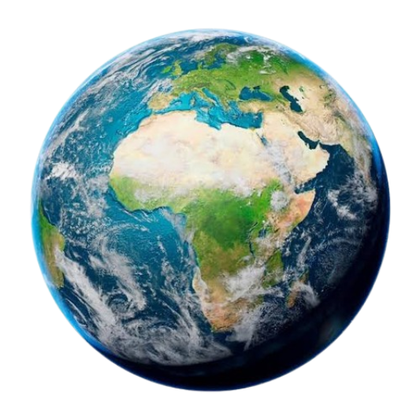
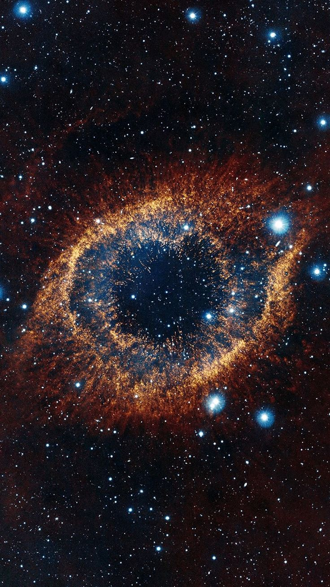
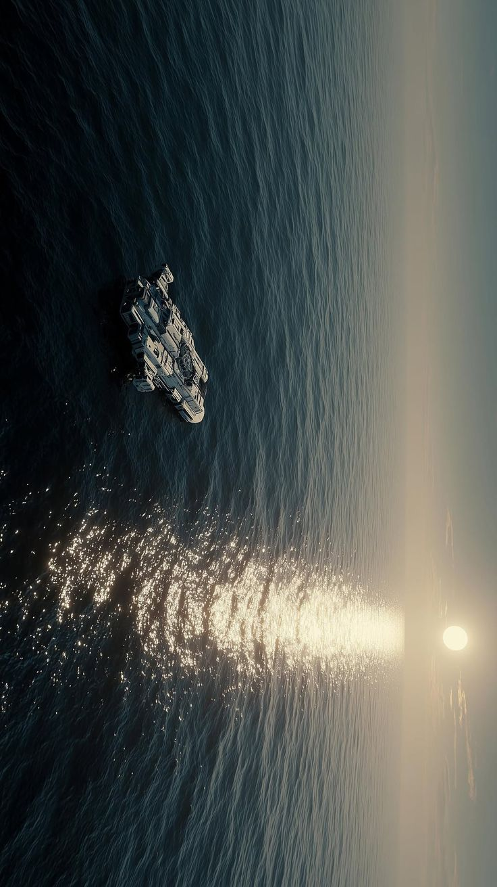
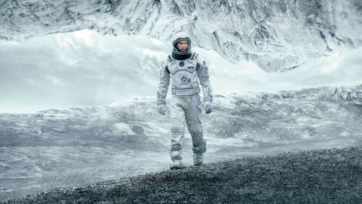
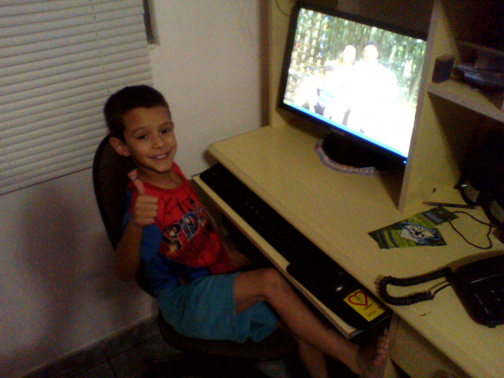

O universo é uma obra de arte; merece ser admirado.
Mais sobre o projeto

Somos pequenos
O objetivo desse projeto não é ser uma plataforma de ensino, mas sim de entreterimento e mostrar que os estudos e o conhecimento tanto da ciência quanto qualquer outro tema, pode abrir portas para lugares inimaginaveis. Como o universo.

Onde a luz não escapa
A ideia nasceu por um projeto da faculdade, em algo que gosto, tive muita curiosidade e gosto por isso então se encaixou.

Além do que vemos
Achou interessante esse porjeto? mas gostaria de assistir algo relacionado ao mesmo? Aqui vai algumas sugestões do que assistir:
interstellar
The Big Bang Theory
De volta para o futuro
Cidade das Estrelas
Sobre mim

Com o projeto da faculade com o tema sobre mim, decidi mostrar algo pelo que me interesso muito e creio que mais pessoas devem ter esse conhecimento, seguindo pela ODS-ONU o quarto item é sobre educação de qualidade, em que uma nação com mais conhecimento abirá novos mundos a todos. Meu objetivo é mostrar que a astronomia é algo importante e de acesso livre, quero que todos tenham a mesma educação que podemos melhorar o mundo em que vivemos.